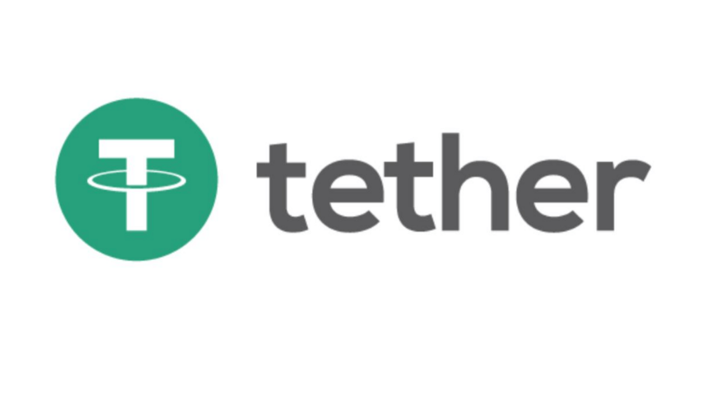

本篇文章为个人学习笔记，所持观点仅供参考～
Stablecoins，稳定币，类似于比特币，也是一种基于区块链技术的数字加密货币。
为什么需要稳定币？
要说比特币有什么缺点，最令人头疼的就应该是比特币的价格波动吧。前一天你账户中的比特币还能买的起一套房子，第二天这些钱可能连个披萨都买不起了（一个比较夸张的例子）。即便价格波动没有这么夸张，比特币的价格在一天内涨或跌20%都不是什么稀罕事。
正因为如此，比特币很难用于日常交易。设想一下，假如你要用比特币去买一杯咖啡。你和店员商量后，好不容易按照当前的比特币价值给店员转了账。结果等到6个确认(comfirmation)过后，比特币价格下跌了20%，店员让你再补一下差价，你说恼火不恼火。
更重要的是，波动如此剧烈的货币，没有人敢拿比特币当成自己的资产。人们更倾向于选择稳定的货币作为自己的资产。那么有没有一种数字加密货币，能够像法定货币一样保值，更甚至来说，直接规定某种数字加密货币，能和美元1:1兑换，就像真正的美元一样直接花呢？
这就是Stablecoin，稳定币。首先，稳定币只是一种统称，并没有哪种货币叫做稳定币。其次，稳定币也是一种数字加密货币，是基于区块链技术搭建的，可以建在以太坊或者其他区块链平台上。换言之，稳定币具有其他数字加密货币的优点，比如去中心化，交易便捷，手续费低等特点。同时，稳定币的价格稳定（顾名思义），不会经历大起大落。从技术上来说，你甚至可以把稳定币用于日常消费（如果法律允许并且对方愿意收的话）。
稳定币如何保值？
那么，稳定币是如何保持价值稳定的呢？注意，稳定币是一种去中心化的货币，并不能哪个政府或公司宣布1稳定币值1块钱，你们都要这么换。比特币或者其他任何数字加密货币的价值，其实和股票类似，如果人们都相信比特币在将来能有大用处，那么购买比特币的人数变多，比特币的价格就会上涨。反之，如果人们普遍认为比特币没有什么前途，大量出售比特币会导致比特币的价格下跌。这是基本的市场运作规律。
所以稳定币最重要的，就是让人们相信，1稳定币不管怎么样，都能够换1块钱。所以稳定币保持稳定最常用的做法，就是和法定货币挂钩(Fiat-linked)，比如美元。比较常见的和美元挂钩的稳定币，有USDT（也叫Tether，泰达币）、TUSD、GUSD等等。（更多稳定币请参考这篇文章）

拿USDT举个例子，为了让人们相信1USDT=1USD，市面上每流通一个USDT，Tether公司都会在银行中存1USD并将其冻结。也就是说，市面上流通的所有USDT的价值是真实存在的，不会有人认为自己手中的USDT在将来会贬值从而大量出售USDT导致其价值下跌，因为不管何时，他们都可以去Tether公司以1:1的汇率把手中的USDT换成USD。也同样不会有人认为USDT的价格在将来会大幅上涨从而大量购入USDT。如此一来，USDT的价格稳定在1USD。（当然，USDT的价格可能会出现轻微的价格波动，就好比你在菜市场讨价还价，你可能会比市场价便宜五毛钱买到一颗大白菜，但是总体价格趋于稳定）
如此看来，稳定币更像是一种真实的货币，而其他的数字加密货币更像是一种股票。
除了和法定货币挂钩，稳定币也可以和某些固定资产挂钩(Asset-linked)，比如黄金，或者其他人们普遍认为会保持的资产。或者，稳定币可以通过算法调整货币供应量(Algorithm-linked)，并且不与任何实质性资产挂钩。简单来说，稳定币的价格还是由市场决定，假如某一天突然很多人购买大量稳定币，导致稳定币价格上涨。则可以通过提前设定好的算法（智能合约）发行更多的稳定币，调整供求关系，稳定其价格。再或者某天出现大量出售稳定币导致价格下跌，智能合约可以销毁部分稳定币，或将部分稳定币从流通市场中移除，使其价格趋于稳定。
稳定币的应用
这里简单介绍两个稳定币应用的例子：
交易所内交易
设想一下，假如你想用美元投资比特币，你可以用银行卡中的美元在某交易所购买一定量的比特币，等比特币价格上涨后，再把这些比特币换成美元转到银行卡中。听起来很简单是吗？在实际操作中，你用银行卡中的美元转给交易所，交易所可能会需要一定时间才能收到你付的美元。因此，可能你无法在付款之后马上得到对应数量的比特币。并且，在卖出比特币时，卖出的美元同样可能需要一定时间才能转到你的银行卡中。比特币的价格波动大，变化快，你可能很容易错过最佳买卖比特币的时机。况且，买卖比特币的过程中，银行可能还会收取手续费，让本来就不多的收益变得更少了。即便一次这样的操作你可以忍受，假如你需要频繁的买卖比特币从而赚取差价呢，这样的操作就显得很繁琐。
现在，有了稳定币的加入。当你想要投资比特币时，你可以首先在交易所中买入一定量的USDT（虽然这一步操作依然可能需要一定时间，但是你只需要做一次）。然后，你可以愉快的使用USDT购买比特币了。USDT和比特币之间的交换都发生在交易所内，因此该交易是实时的，并且手续费极低（这就要看交易所愿意收多少了）。你可以频繁的使用USDT购买比特币，把比特币卖为USDT，实时交易可以让你不错过最佳的买卖时机。假如你下个月想出去玩，没有时间盯着比特币价格看，并且不想因为比特币价格突然下跌导致自己的资产受损，你可以把交易所中你持有的比特币全部换成USDT。当然，这些USDT依旧放在交易所中，等你下次有空继续拿这些钱投资。因为1USDT始终等于1USD，哪怕你出去玩一年都不用担心自己在交易所中的资产贬值。（你可能需要注意一下别让交易所跑路了hhh）。等你什么时候需要这笔钱，或者你不想继续投资比特币了，你可以再把USDT换成美元放到自己的银行卡里。通过使用稳定币，帮你省下了银行卡和交易所之间大量的手续费。
跨国间交易
假如你和你的朋友想要进行跨国间转账（国内就不说了，支付宝直接转就完事了，便宜还快捷），不同国家之间的银行系统转账步骤极其繁琐，并且每次转账可能都要收取一定数量的基础手续费，资金到账时间可能也需要一天甚至更长。假如你只想转100美元给你的朋友，你发现通过银行还需要额外支付10美元的电报费，这对于小额转账是极其不友好的。
有了稳定币的加入，你可以先买100USDT，然后通过区块链把这100USDT转到你朋友的USDT账户上，你朋友再把这些钱提到银行卡中。由于区块链一天24小时都在运行，只需要等待一个blocktime你的朋友就能收到钱了，并且手续费也没有如此之高。可谓是极其方便。
但是，正是因为跨国交易过于方便，某些国家和地区是禁止稳定币的交易的。设想一下，假如A国贪官想要带钱潜逃到B国。这笔钱通过银行系统肯定是转移不掉的，因为A国银行会发现如此大额交易流向海外，必定会前去调查。这时，假如贪官在A国把钱全部换成USDT，在到B国把USDT换成当地货币，一大笔未经审查的资金就流向了海外。因此，国家不得不禁止此类交易。
个人感觉，稳定币以及数字加密货币在未来有很大潜力。Time will tell.